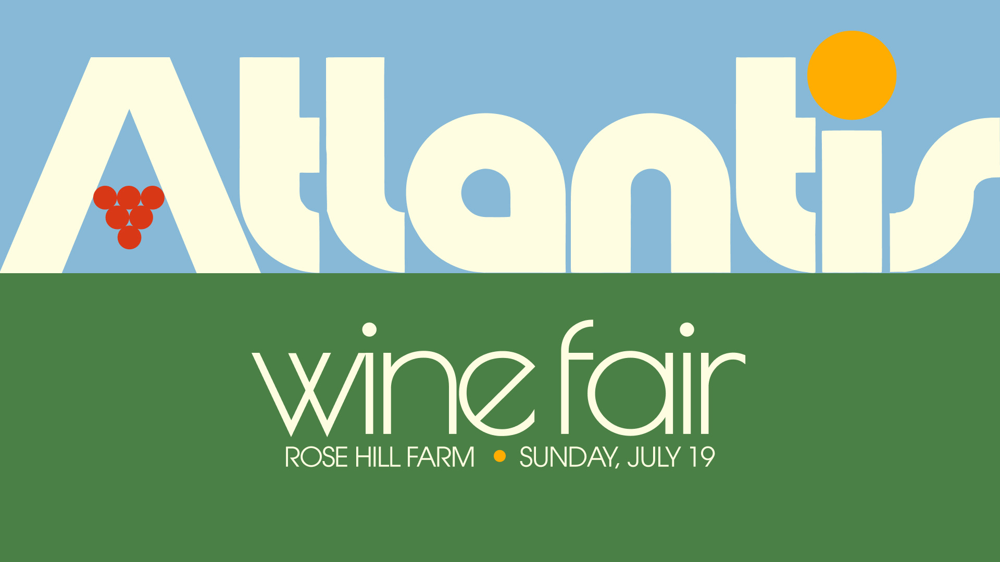
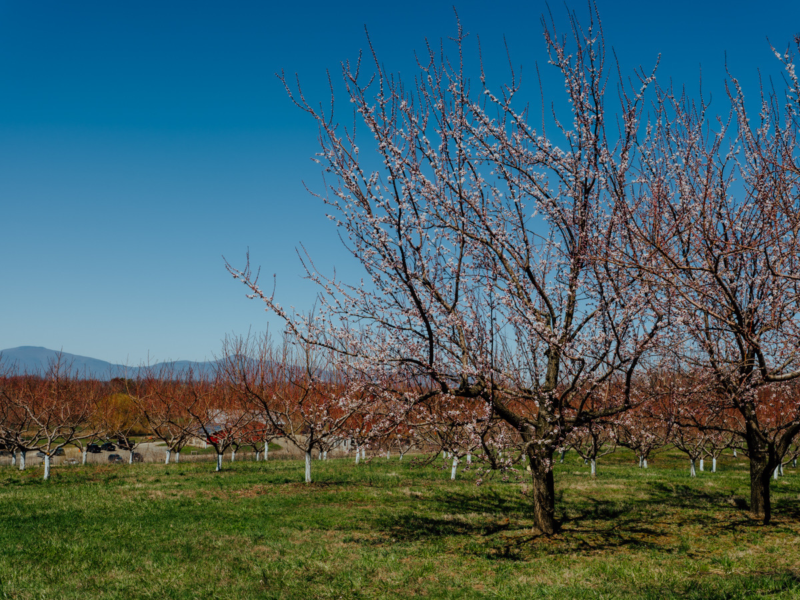

Atlantis Wine Fair
Celebrating New York Wine
Atlantis aims to explore the bounty of New York wine from the Atlantic to the Finger Lakes by featuring producers that are paving the way for the future of the craft in our state. It celebrates the forward thinking, category-defying and innovative ways in which producers approach their trade.
Please join us for an afternoon of tasting, panel discussions, and meeting of minds to generate excitement and energy for the future of winemaking in New York.
Visit info
Rose Hill Farm.

Rose Hill Farm is a historic Red Hook, NY orchard established in 1798, with about 114 acres of farmland. They grow cherries, blueberries, plums, apricots, peaches, and apples, and describe their approach as ecological orchard management focused on soil and plant health. Rose Hill Ferments is on the farm and makes low-intervention wines, ciders, and co-ferments from primarily estate-grown fruit.
- Date
- Sunday, July 19, 2026
- Location
- Rose Hill Farm
Contact